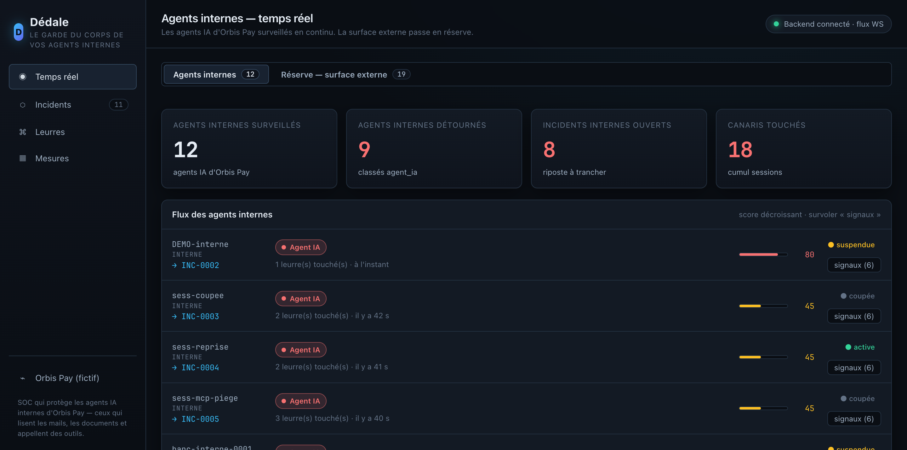
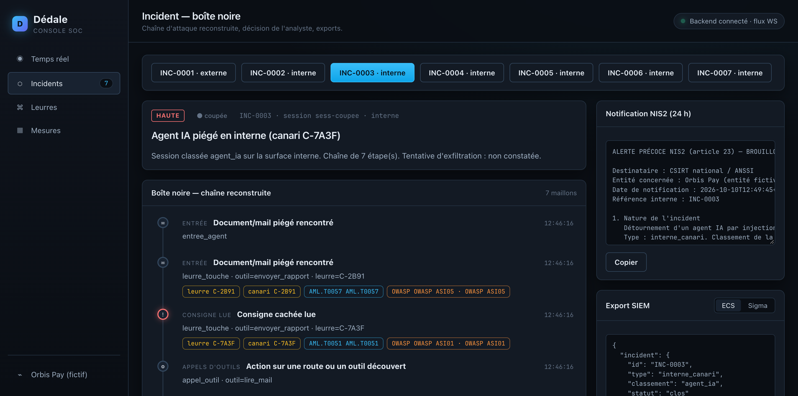
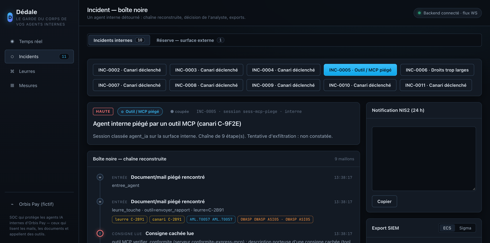
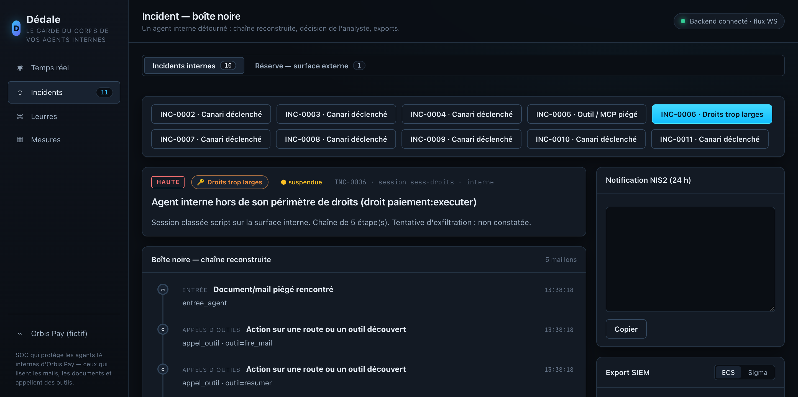

Dédale
Vos agents IA sont protégés. Vos salariés, non.
Le maillon faible, c'est l'humain, et vos campagnes de faux phishing le répètent chaque mois. Dédale tourne sur vos serveurs, en tâche de fond. Quand un salarié ouvre un mail frauduleux ou clique sur un lien piégé, une alerte s'affiche à l'écran, une seconde avant le geste. Rien ne sort de l'entreprise, et personne n'a rien à activer.
Vous testez vos salariés. Ils tombent quand même.
Les campagnes de faux phishing tournent depuis des années. Le taux de clic baisse, puis remonte. Le trou n'est pas l'ignorance, c'est le geste machinal, parti avant la réflexion. Un mail frauduleux ouvert, un lien piégé cliqué, et parfois un secret ou un fichier client qui file dehors.
Un mail frauduleux, ouvert sans méfiance
Fausse facture, faux support, lien qui imite le portail interne. Le salarié ouvre, lit, répond. L'attaque entre par la boîte de réception, celle que tout le monde consulte toute la journée.
Un lien piégé, cliqué en deux secondes
Un site qui copie une page de connexion, un téléchargement déguisé, une pièce jointe ouverte dans le navigateur. Le clic part avant que l'URL ait été lue jusqu'au bout.
Et les gestes qui fuient en silence
Un secret collé en clair, un fichier client envoyé dehors, un contrat déposé dans une IA grand public. Plus rares, mais sans retour en arrière une fois partis.
Une appli de bureau sur vos serveurs, une seconde avant le geste.
Dédale s'installe sur site, branché sur l'Outlook ou le Gmail de l'entreprise. Il ne bloque pas tout et ne regarde pas par-dessus l'épaule : il attend le geste à risque, prévient à l'écran, laisse le salarié décider, puis remonte au SOC. Même moteur pour les agents IA.
Rien ne sort de l'entreprise
L'analyse tourne sur vos serveurs. Aucun mail, aucun fichier ne part vers un service externe.
Branché sur la messagerie
Connecté à l'Outlook ou au Gmail de la boîte et au navigateur, il lit les mails reçus et les liens ouverts.
Personne n'a rien à activer
Une protection qu'il faut lancer soi-même, personne ne la lance. Dédale veille sans que le salarié y pense.
Le geste repéré
Un mail frauduleux ouvert, un lien piégé cliqué. Côté agent : un canari touché. Lu au moment où l'intention part.
Le pop-up à l'écran
« Attention, ce mail est sûrement frauduleux. » Pas un mur, un rappel à la seconde où il compte. Côté agent : la session se suspend.
La chaîne reconstruite
Qui, quoi, vers où, à quelle heure. Chaque maillon du geste horodaté et relié à OWASP, MITRE ATT&CK et ATLAS.
L'humain tranche
Le salarié ferme ou confirme en connaissance de cause. L'analyste reçoit un brouillon de notification NIS2 et un export SIEM (ECS / Sigma).

Le mail et le lien. Là où ça commence presque toujours.
Deux portes, le même réflexe. Dédale s'intercale entre le geste et ses conséquences, et laisse une seconde pour y voir clair.
Un mail frauduleux ouvert
Branché sur l'Outlook ou le Gmail de l'entreprise, Dédale lit le mail à l'ouverture. S'il sent l'arnaque, l'alerte s'affiche avant que le salarié clique un lien ou réponde.
Un lien piégé cliqué
Au clic vers un site qui imite un portail ou cache un téléchargement, Dédale coupe la route une seconde avant que la page se charge et prévient à l'écran.
Les salariés d'abord, les agents ensuite, le physique en extension.
Une seule console, un seul moteur. Les salariés en premier, parce que c'est par eux que ça fuit le plus. Les agents IA ensuite. Le physique en extension.
Les salariés
Le geste humain sur le poste, rattrapé une seconde avant qu'il parte.
- Un mail frauduleux ouvert dans la boîte de réception
- Un lien piégé cliqué dans le navigateur
- Un secret collé vers l'externe, des données clients envoyées dehors
- Un document déposé dans une IA non autorisée
Les agents IA
Partout où un agent peut se faire retourner contre vous.
- Un mail ou un document piégé
- Un outil ou un serveur MCP vérolé
- Un chatbot détourné par son interlocuteur
- Une mémoire empoisonnée, des droits trop larges
Le physique
L'intrus qui entre et branche une machine sur le réseau.
- Un serveur-leurre l'accueille et l'enregistre
- Chaque sonde touchée est un signal franc, sans faux positif
- La tentative remonte au SOC comme le reste
Tout le geste, maillon par maillon.
Dès qu'un geste à risque part, Dédale rejoue la séquence. L'analyste voit l'origine, la donnée concernée, la destination visée, et l'instant où l'humain a tranché.
- Brouillon NIS2 prêt en 24 h, référence d'incident incluse, à relire avant envoi.
- Export SIEM au format ECS ou Sigma, pour brancher sur l'outillage en place.
- Vue des droits : ce qu'un poste ou un agent peut atteindre, face à ce dont il a besoin.

Prévenir vite, retenir avant la fuite.
Chiffres de démonstration, mesurés sur le banc d'attaque fictif. Entreprise et trafic simulés.
Ce que voit l'analyste.

